The integration test suite validates the complete agent-swarm-kit system by testing interactions between agents, swarms, sessions, tools, and the underlying service infrastructure. These tests ensure that all components work together correctly under various scenarios including concurrent operations, error conditions, and resource management.
For information about test utilities and mock services, see Test Utilities.
The integration tests use the worker-testbed framework and are organized into focused test suites that validate specific system behaviors. Each test creates a complete system configuration including agents, completions, tools, and swarms.

The connection tests validate concurrent session management, message queuing, and event handling across multiple client connections. These tests ensure the system maintains proper isolation between clients while handling parallel operations.

| Test Case | Purpose | Key Functions Tested |
|---|---|---|
| Parallel Complete Calls | Validates session isolation | complete, randomString, Promise.all |
| Connection Orchestration | Tests swarm navigation | changeToAgent, execute, session |
| Message Queuing | Ensures ordered processing | complete, getRawHistory, setConfig |
| Event System | Validates event handling | makeConnection, listenEvent, event |
Navigation tests validate agent transitions, tool execution, and deadlock prevention mechanisms. These tests use a triage-sales-refund agent pattern to simulate real-world navigation scenarios.

The navigation tests cover several critical scenarios:
changeToAgent and execute for moving between agentschangeToDefaultAgent functionalitychangeToPrevAgent for navigation historycommitToolOutput prevents execution blockingDisposal tests validate proper cleanup of sessions, connections, and associated resources. These tests ensure no memory leaks occur when connections are terminated.

The rescue tests validate error handling mechanisms when tools fail, completions return empty responses, or validation fails. These tests use the CC_RESQUE_STRATEGY configuration to control error recovery behavior.
| Error Condition | Test Method | Expected Behavior |
|---|---|---|
| Non-existent Tool Call | Mock completion returns invalid tool | System returns placeholder from CC_EMPTY_OUTPUT_PLACEHOLDERS |
| Empty Completion Response | Mock completion returns empty content | System applies rescue strategy |
| Failed Tool Validation | Tool validation returns false | System prevents tool execution and applies rescue |
Validation tests ensure the dependency injection system properly validates component dependencies before allowing system operations. These tests verify that missing components are detected and reported.

The ignore tests validate that messages are properly filtered based on agent state, ensuring that only the active agent processes messages while inactive agents ignore execution requests.
The system maintains agent state per client session and filters messages based on the currently active agent:
execute(message, clientId, agent) only processes when the specified agent is activecommitToolOutput(toolId, output, clientId, agent) only commits from active agentscommitSystemMessage(message, clientId, agent) only processes from active agentsIntegration tests use several strategies for managing test data and ensuring test isolation:
randomString() to generate unique client identifiersaddCompletion with custom logicsetConfig() to modify system behavior for specific scenariosgetRawHistory(clientId) to verify message ordering and content